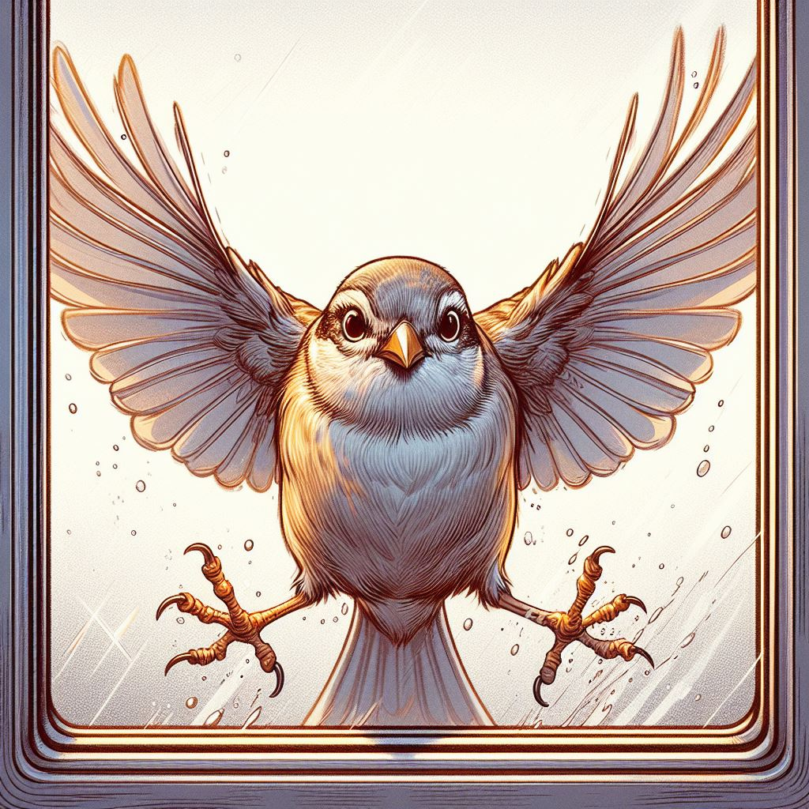

Bird collisions with windows and other structures are a significant cause of bird mortality worldwide. Our project aims to gather and analyze data on these collisions to better understand their impact on bird populations and to find effective solutions to mitigate this issue.
We use data collected from various sources, including citizen scientists, wildlife organizations, and research institutions, to create comprehensive datasets. These datasets are then used to create visualizations and models that help us understand the patterns and causes of bird collisions.
Our mission is to reduce bird mortality caused by collisions through data-driven insights and community engagement. By raising awareness and providing educational resources, we aim to inspire action and promote practices that make our environments safer for birds.
You can contribute to our efforts by reporting bird collisions, participating in data collection initiatives, and spreading awareness about the issue. Together, we can make a difference and protect our feathered friends.
If you have any questions or would like to get involved, please contact us. We appreciate your interest and support!